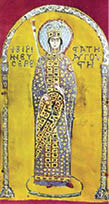
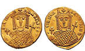
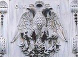
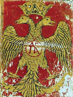

Doğu Roma’ya Damat Adayı Şarlman!
Şarlman, Papa Leo’nun elinden bir taç giymesine giymişti. Ama kafasına uyarlanan tacın ve adının önüne takılan “Romalıların İmparatoru” ünvanının meşru olmadığını biliyordu. Konstantinopolis tahtında Pontifex Maximus ünvanını ve kadim tarihin tacını taşıyan bir “Roma İmparatoru” oturduğu sürece, Avrupa’ya hâkim olsa da Hıristiyan âleminin imparatoru, o değildi...
Şarlman’ı Büyük Konstantin’e atfedilen vasiyetin sahteliğini görmezden gelmekten, Papa’yı yetkisi olmadan yargılamaya; kendisini alternatif bir imparator ünvanı ve uyduruk bir taçla Roma’nın geleneksel meşruiyetinden ayrılmaya iten birden fazla jeopolitik neden vardı. Ama bu nedenlerden belki de en önemlisi, Kadim Roma tahtında bir kadının oturuyor ve meşru “Roma İmparatoru” ünvanını bir imparatoriçenin taşıyor olmasıydı.
Altmış yaşına bastığı 802 yılında; birisi doğum sonrası ölüp, diğerlerini boşadığı beşinci karısıyla altıncı karısı arasındaki geçici bekârlık dönemlerinden birini yaşıyordu. Önüne tarihi bir fırsat çıktığını düşündü, Şarlman.
Eğer İmparatoriçe İrene’yi kendisiyle evlenmeye ikna edebilirse hem kendisi için uydurulan imparator ünvanı meşruiyet kazanacak hem de Batı ile Doğu Roma’yı bir tek tacın, kendi tacının altında birleştirmiş olacaktı.
Üstelik, İmparator kocası Leo’nun eceliyle öldüğü 780 yılından beri çok sayıda âşığı eskiten, ama kimseyle evlenmemiş olan İmparatoriçe İrene’nin 48 yaşına rağmen çok güzel bir dul olduğu söyleniyordu...

Atinalı İrene
(Pala d’Oro/ 1204 talanında Konstantinopolis’ten Venedik’e getirilmiştir.)

İmparatoriçe İrene’nin sureti basılı altın sikke

Çift Başlı Doğu Roma Kartalı 1

Çift Başlı Doğu Roma Kartalı 2
Aslında iki hükümdar arasındaki yakınlaşma fikri, yeni değildi. Doğum yeri dolayısıyla “Atinalı” diye de anılan İrene, henüz naibe olduğu sırada Şarlman’a elçiler göndermiş, Roma tahtının vârisi biricik oğlunu, Frank Kralı’nın çok sayıda kızından biriyle evlendirmek istemiş, kabul de görmüştü. 781 yılında nişan anlaşması yapıldığında, damat adayı Altıncı Konstantin 10, gelin adayı Rotrude 6 yaşındaydı.
Ne var ki İrene, nişandan altı yıl sonra, artık 16 yaşındaki oğlunun bizzat istediği bu evlilik projesinden vazgeçti. Zaten imparatorluk tacı için oğlunu da feda etmeye hazırdı. Yaşı çoktan gelmesine rağmen türlü çeşitli entrikalarla tahta çıkması önlenen Altıncı Konstantin, 797 yılında annesinin emriyle gözleri oyularak öldürüldü!
Bu cinayetten de anlaşılacağı üzere Atinalı İrene, zaten yirmi yıldır naibe olarak oturduğu Roma tahtını tek başına sahiplenmek uğruna oğlunu bile katleden, iktidar uğruna her şeyi yapabilecek, hırslı bir kadındı. 797 yılından öteye imparatoriçe tacını taşıyordu.
Şarlman’ın evlilik teklifini iletmekle görevli elçiler Konstantinopolis’e vardıklarında, Doğu Roma tam da İmparatoriçe’nin yanlış politikaları yüzünden bir kıtlık dönemi yaşıyordu. Hazine öylesine erimişti ki, tebaası Atinalı İrene’den nefret etmekte, danışmanları birbirini yemekteydi. Er geç bir isyan ya da darbe girişimi kaçınılmazdı.
İmparatoriçe İrene, bu ahval ve şerait altında ortaya çıkan Şarlman’ın evlilik önerisini kurtarıcı bir fırsat görüp olumlu karşılamak niyetindeydi. Kocalık adayının bizzat kendi ünvanına rakip bir imparator, Doğu Roma Kilisesi’ne göre dinden sapmış biri ve sahtekâr olması umurunda bile değildi. Şarlman’la nikâhlanarak önce kendi canını, sonra da imparatorluğunu parçalanmaktan kurtarabileceğini düşünüyordu.
Ne var ki Konstantinopolis saray erkânı ve tebaası aynı görüşte değildi, hem de hiç!
John Julius Norwich, Bizans yapıtında, bu görüş farklılığını şu sözlerle anlatır:
“Doğu Romalılar için Şarlman’ın kendinden menkul tacı ve ünvanı, kabul edilemez bir haddini aşmışlıktan öte, bağışlanmaz bir günahtı. Onların imparatorluğu çifte kutsallık temeline dayanıyordu: Gökyüzünde bir Tanrı olduğu gibi, yeryüzünde de bir İmparator vardı, ikincisi olamazdı.
Üstelik, Batılı prenslerin aksine, kadınlara hükümdar olmayı yasaklayan bir yasası yoktu, Doğu Romalıların. Evet, İmparatoriçe İrene’den nefret ediyorlardı; ama tahta çıkma hakkını ve hükümdarlık meşruiyetini asla tartışmaya açmamışlardı, açmazlardı. Dolayısıyla İmparatoriçelerinin okuma yazması bile olmayan bir barbarın evlenme önerisini ânında reddetmek yerine kabul etmek eğilimini göstermesi, onları çileden çıkardı.
Bu kadarı fazlaydı!
İmparatoriçe İrene’nin tebaası; kırmızı bağcıklı gülünç papuçlar giyen bu zevksiz ve kaba Frank, anlaşılmaz bir dil konuşan ve imza atmayı bile beceremediği için mühür kullanan bu cahil barbarı, İmparator olarak kabullenmeye hiç mi hiç razı değildi...”
Nitekim razı olunmadı.
İmparatoriçe İrene’nin hava almak için Konstantinopolis’e yakın bir bağ evinde dinlenmeye çekilmesini fırsat bilen bir grup Roma soylusu ve yüksek rütbeli subay, 31 Ekim 802 günü Büyük Saray’ı ele geçirdiler. Bugün Sultanahmet Meydanı olan Hipodrom’da topladıkları halk meclisine, İrene’nin tahttan indirildiğini açıkladılar ve yerine, sarayın haznedarı Nikeforos’u imparator ilan ettiler.
Atinalı İrene, bağ evinde tutuklanarak askeri konvoy eşliğinde başkente getirildi. Önce Büyükada’da kendi iktidarı sırasında yaptırdığı manastıra kapatıldı. Birkaç ay sonra bir manastıra başrahibe sıfatıyla, Lesbos (Midilli) Adası’na sürüldü.
Ama eski imparatoriçe, rahibeliğe mi dayanamadı, sürgün yaşamına mı bilinmez; tahttan indirilmesinin üstünden bir yıl bile geçmeden, 9 Ağustos 803’te Midilli’de öldü. Cenazesi başkente getirilerek, Büyükada’daki manastırına gömüldü.
Doğu Romalılar, soyunu küçümsedikleri ve ünvanını gayrimeşru saydıkları Şarlman’ın pençesine düşmekten, kendi imparatoriçesini feda ederek kurtulmuştu. Ama kadim imparatorluk, asla sindiremeyeceği bir oldubittiye getirilmişti: Batı’da gülünç bir kabile reisi kendisine imparator dedirtmekte ve tacını da Roma’daki Papa’nın elinden giymekteydi. Hıristiyan dünyasının altından geçen fay hattında derin bir çatlak açılmıştı. Bu çatlak, dünyayı ikiye ayıracak büyük depremin habercisiydi.
Atinalı İrene’nin tarihte aldığı yere gelince...
Zamanın günceleri, İrene’nin tutuklanmasından ölümüne değin başına gelenleri büyük bir vakarla karşıladığını yazar. Devrik imparatoriçenin cinayetlerini unutan Doğu Roma Kilisesi, kendisini ikonaları yeniden serbest bırakan hükümdar olarak anımsamayı yeğlemiş ve azize ilan etmiştir. Öldüğü 15 Ağustos tarihi, Ortodoks takviminde Azize İrene’nin anıldığı gündür.